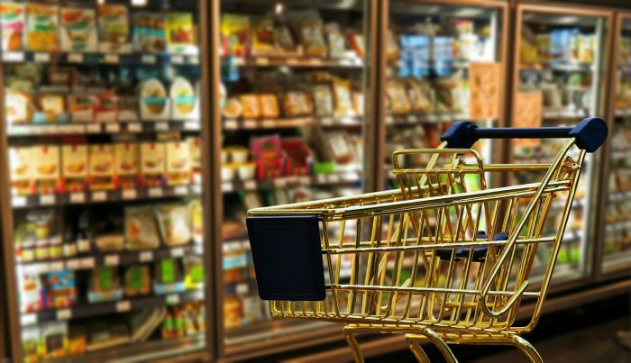

Du willst spontan am Abend noch feiern gehn und möchtest davor noch ein paar Getränke zum vorglühn besorgen? Oder kommst Sonntag drauf dass dein Kühlschrank leer ist? Dann sind die folgenden Shops warscheinlich deine Rettung. Diese Auswahl an Geschäften und Restaurants versorgt dich außerhalb der üblichen Geschäftszeiten mit allem was dein Magen begehrt.
Hier kommst du zu unserer KARTE.
